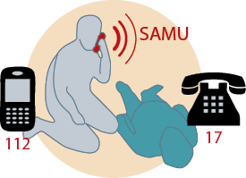

01 - Les risques pour les seniors
Le risque principal pour les personnes âgées entre 65 à 74 ans se situe dans les voitures de tourisme (292 tués), suivi des piétons (65 tués). Pour les personnes de 75 ans et plus il en est de même dans les voitures de tourisme (296 tués) mais le risque piéton augmente considérablement (173 tués) (Sources : ONISR, l’argus de l’assurance 05/2016).
Attention aux intersections, ce sont les endroits où surviennent la majorité des accidents des seniors en véhicule de tourisme mais également aux abords de celles-ci pour les piétons.
L’état de santé
Quelques points à surveiller en permanence :
la vision, l’audition, la mobilité et principalement toutes les raideurs articulaires (cervicales, lombaires, genoux…).
Les médicaments
Certains ont des effets affaiblissants ou stimulants incompatibles avec la conduite d’un véhicule (endormissement, perte d’équilibre, temps de réaction allongé…). Lisez attentivement la notice.
Sur une boîte de médicaments, les pictogrammes ci-dessous sont synonymes de risques liés
à la conduite. Attention au cumul.
02 - Les seniors et la circulation à pied
Soyez réceptif à l’environnement
Libérez votre champ visuel, soyez mobile de la tête, regardez loin et large et doublez vos contrôles pour bien évaluer la vitesse de rapprochement des autres. Évitez les capuchons qui limitent vos prises d’informations visuelles nécessaires.
Écoutez les bruits de la rue, ils vous informent de ce que vous ne voyez pas encore et de ce qui se passe derrière vous. Se déplacer à pied dans la rue avec des écouteurs aux oreilles ou même en téléphonant, c’est comme si on avait un revolver sur la tempe !
Chacun sa place !
« Usager vulnérable », il faut s’écarter des limites des voies de bus, des pistes et bandes cyclables, des bords aux arrêts de bus, des damiers matérialisant les passages etc.
Marcher en zone de rencontre
L’allure de déplacement doit être compatible avec la prise d’informations sur l’entourage et l’environnement. Les trajectoires de marche ne sont pas les mêmes et se rencontrent, il faut alors laisser la priorité aux plus vulnérables.
Les situations dangereuses
• Traverser une chaussée en biais ce qui empêche de surveiller les deux sens du trafic.
• Marcher sur l’axe de la chaussée entre les deux sens de trafic de jour comme de nuit même avec les habits réfléchissants.
• Ne pas laisser le temps aux conducteurs de réagir en se jetant sur un passage piéton.
Les voitures ne peuvent pas s’arrêter net ! Commencer à traverser en vous tenant à droite du passage afin de laisser plus d’espace au conducteur qui serait surpris.
Franchir les voies du tram
« Un tramway peut en cacher un autre ! »
Alors attendez que le premier se soit bien éloigné  avant de vous aventurer
avant de vous aventurer  car il peut y en avoir un autre derrière.
car il peut y en avoir un autre derrière.
Proximité bande cyclable/trottoir
Respectez la séparation des deux zones, signalées par un marquage ou un revêtement différent. Cette cohabitation reste dangereuse car piétons et cyclistes sont plutôt silencieux, on ne les entend pas toujours arriver.
Traverser un rond-point à pied
N’utilisez jamais l’anneau central mais faites le tour en traversant autant de chaussées que nécessaire et assez loin de la jonction du rond-point avec la chaussée.
Si vous êtes sur la ligne du “cédez le passage”, les automobilistes auront du mal à gérer à la fois trafic et piétons, traversez bien avant, sauf s’il y a un passage piéton.
Zone piétonne
Bien que réservées aux piétons, des cyclistes, rollers et autres skate-boards peuvent se trouver dans les zones piétonnes ; en cas de danger la meilleure tactique est de s’arrêter et de rester immobile le temps de leur passage.
Téléphoner en marchant
Même à l’allure de la marche votre esprit
est à la conversation, pas au déplacement.
Vous n’allez pas voir ni entendre suffisamment
tôt l’arrivée des autres en traversant
la chaussée. Le problème est le même que
pour les conducteurs de véhicule qui téléphonent au volant, à part la vitesse.
Écrire un SMS en marchant, c’est 4 fois plus
de risque d’accident.
Il en est de même en lisant, à l’exception
des bruits de l’environnement.
Panneaux et feux spéciaux
Panneaux d’indication / d’obligation
Feux piétons
![]() Pendant la phase rouge des feux tricolores pour les véhicules, les feux piétons sont verts en général.
Pendant la phase rouge des feux tricolores pour les véhicules, les feux piétons sont verts en général.
Oui... mais pas toujours ! Dans certains carrefours compliqués ou traversés par des voies de Tramway ou de Bus, il y a des différences : alors regardez bien
votre « piéton lumineux » et aussi les véhicules (leur allure surtout) avant de vous engager.
03 - Les seniors dans les transports publics
Bus et tramway
Les transports publics sont un excellent
moyen pour se déplacer facilement et économiquement sans avoir de problème
de stationnement dans les villes.
Alors que le métro fonctionne hors du trafic,
il n’en est pas de même pour les autobus
et le tramway qui eux sont confrontés
aux aléas et surprises de la circulation.
Voici quelques attitudes de prévention
qui vous seront utiles dans l’utilisation
de ces moyens de transport.
Aux arrêts de bus
À l’arrivée du bus restez en retrait
du bord du quai afin que le conducteur
puisse bien y ajuster son véhicule...
... et aussi pour éviter d’être frôlé ou même touché par le rétroviseur extérieur si vous êtes de grande taille.
Se diriger et s’assoir
La place idéale est le dos dans le sens
de la marche afin d’éviter d’être projeté en cas de freinage d’urgence.
Pour s’y diriger, assurez votre stabilité en vous tenant fermement aux hauts des dossiers de sièges ainsi qu’aux barres de maintien qui sont nombreuses : « une main pour l’homme, l’autre pour le véhicule ».
Préférez les places qui vous sont réservées et asseyez-vous dès que possible même si vous ne vous trouvez pas aussi près que vous l’auriez souhaité. Les boutons d’appel pour obtenir le prochain arrêt de bus sont nombreux et jamais loin, repérez-les une fois que vous êtes installé.
Les places prioritaires
![]()
Elles sont réservées par rang de priorité
aux personnes suivantes :
• mutilés de guerre et mutilés militaires ;
• aveugles civils ;
• invalides du travail ;
• infirmes civils avec station debout pénible ;
• femmes enceintes ;
• personnes accompagnées d’enfants
de moins de 4 ans ;
• infirmes civils sans précision de la station
debout pénible ;
• personnes titulaires de la carte station
debout pénible ;
• personnes âgées de 75 ans et plus.
Descendre du bus ou du tramway
En cas d’affluence il y a de fortes chances de ne pas être le seul à descendre au même arrêt, alors restez assis ne vous levez pas trop tôt et à nouveau tenez-vous en continu aux barres de maintien tant que le bus n’est pas arrêté.
Tenez-vous bien aux barres de maintien pendant la descente des marches, il y en a même qui sont fixées aux portes quand elles sont repliées une fois ouvertes.
Assurez-vous de la distance entre le marchepied et le trottoir avant de faire le pas.
Après être descendu du bus
Ne traversez la rue qu’après le départ du bus
et son éloignement. Ne passez JAMAIS devant le bus à l’arrêt, passez derrière, ainsi vous verrez le trafic et ne serez pas surpris. D’ailleurs c’est pour cela que la montée en bus se fait
par l’avant et la sortie par les portes arrières.
04 - Les seniors au volant : règles de sécurité
Voyez loin, voyez large !
Au volant, si vous regardez loin, vous aurez plus de temps pour anticiper et réagir et votre conduite en sera plus confortable.
Balayez du regard, faites confiance à votre vision périphérique.
• Ralentissez aux intersections : même si vous avez la priorité et au moindre doute “couvrez” le frein.
• Essayez de deviner ce que les autres pourraient faire de surprenant pour être prêt
à réagir.
Baisse de vigilance
La conduite fatigue ! Il faut se reposer
(arrêt ou sieste) toutes les 2 heures. Le manque de sommeil réduit la vigilance lors des périodes d’éveil et ce n’est pas la monotonie qui endort, mais la fatigue. S’il y a fatigue la monotonie favorise... la somnolence.
Les signes précurseurs
1. Raideur de la nuque, douleur dans le dos,
regard fixe.
2. Paupières lourdes, bâillement, besoin fréquent
de changer de position.
3. Difficulté à maintenir une vitesse constante, difficulté de maintien de la trajectoire, inattention
à la signalisation ou au trafic.
Les accidents qui ont pour principale cause la baisse de l’attention surviennent la nuit entre 2 h et 5 h ; l’après-midi entre 13 h et 16 h.
• Pour compenser les troubles de la vue : rouler moins vite, et surtout moins près, particulièrement la nuit.
• Pour compenser les troubles de l’ouïe : éviter les distractions radio/conversations (attention à l’usage du kit mains libres).
Mettez et faites mettre la ceinture
C’est évident pour pouvoir bénéficier de tout
ce que le constructeur a prévu en sécurité passive de votre véhicule.
Différentes enquêtes signalent des cas
d’accidents mortels sans port de ceinture
à partir de 25 km/h !
L’alcool
Si la loi se réfère toujours en “grammes dans le sang”, les appareils de dépistage mesurent en milligrammes dans l’air expiré !
• Dépistage air / sang à partir de 0,25 mg/L d’air (= 0,5 g/L de sang) : contravention, 135 € ; 6 points de retirés.
• Dépistage air / sang : à partir de 0,40 mg/L d’air (= 0,8 g/L de sang) : délit, 4 500 €, 6 points retirés, annulation du permis pour 3 ans ; prison (2 ans).
• En cas d’ivresse manifeste, peu importe
votre taux, les sanctions seront celles
prévues dans le cadre du délit.
La déchéance d’assurance
Si vous vous trouvez en état d’alcoolémie ou d’ivresse, votre compagnie d’assurance est en droit de ne plus couvrir tout ce qui ne ressort pas de la stricte responsabilité civile. Vos propres dommages resteront alors à votre charge si votre véhicule est détruit et les échéances de crédit devront quand même être remboursées.
Adoptez un comportement écologique
• Limitez le nombre de déplacements ;
• Faites entretenir régulièrement votre véhicule ;
• Utilisez un modèle de petite cylindrée ;
• Préférez le lavage à haute pression plus économique en eau que le lavage à la main
ou aux rouleaux ;
• Surveillez l’étanchéité des éléments
de votre véhicule pour contribuer à la propreté des sols et des réserves d’eau.
05 - Les seniors au volant : le véhicule
Vérifiez votre véhicule avant de prendre le volant
• La pression des pneus : vérifiez-la à froid après avoir roulé calmement jusqu’à la station-service. Les pressions de votre voiture figurent soit sur le champ de la porte conducteur soit à l’intérieur du pavillon du bouchon de réservoir. A vérifier toutes les 3 semaines.
• L’usure des pneus : repérez les indicateurs d’usure signalés sur le haut du flanc par le symbole  ou TWI ou la marque du pneu. S’ils affleurent la bande de roulement, le pneu est trop usé : changez-le immédiatement !
ou TWI ou la marque du pneu. S’ils affleurent la bande de roulement, le pneu est trop usé : changez-le immédiatement !
• Le liquide de freins : c’est essentiel pour votre sécurité, pas assez ou plus de liquide, c’est moins ou pas de freinage, donc l’accident assuré ! A vérifier tous les 2 pleins.
• Le liquide de lave-glace : à vérifier tous les 2 pleins.
Le contrôle technique
Le contrôle technique est obligatoire pour tous les véhicules.
Pour les véhicules de moins de 3,5 T :
• le premier contrôle doit être effectué 4 ans après l’achat du véhicule neuf ;
• il doit être ensuite renouvelé tous les 2 ans ;
• un contrôle favorable de moins de 6 mois est exigé lors de la revente ou de la demande d’un duplicata de carte grise.
Les vitesses maximales autorisées
La vitesse est limitée à 50 km/h pour
toutes les situations de conduite où la visibilité est inférieure à 50 m.
|
|
Conditions de conduite normales |
Par temps |
|
|
Autoroute |
130 km/h |
110 km/h |
110 km/h |
|
Route réglementée |
110 km/h |
100 km/h |
100 km/h |
|
Route réglementée |
90 km/h |
80 km/h |
80 km/h |
|
Agglomération |
50 km/h |
50 km/h |
50 km/h |
![]()
06 - Les seniors au volant : la conduite
Distances de sécurité
La loi impose au conducteur de respecter une distance de sécurité d’au moins 2 secondes avec le véhicule qui précède : c’est le temps minimum nécessaire au conducteur pour prévenir tout risque de collision.
Des distances plus grandes peuvent être imposées, dans les tunnels par exemple.
Comment faire ?
Repérez un point de passage du véhicule qui vous précède (un arbre, un poteau, un panneau par exemple), et comptez à haute voix “une seconde, une, deux secondes, deux”, avant d’atteindre ce même point.
Les situations d’urgence
Vos freins lâchent : rétrogradez immédiatement de deux vitesses, embrayez doucement pour utiliser votre frein moteur. Tirez progressivement votre frein à main pour ralentir sans bloquer les roues.
Votre pare-brise éclate : stoppez votre véhicule en vous repérant par les vitres latérales.
Les essuie-glaces tombent en panne : ouvrez votre vitre latérale pour vous repérer et arrêtez-vous. S’il s’agit d’une panne de balai, intervertissez-le si c’est possible avec celui de la vitre arrière.
Panne de phares : allumez vos feux de détresse et ralentissez, roulez au pas sur la partie la plus à droite en prenant des repères visuels.
L’ABS réagit : vous freinez très fort et votre pédale de frein cherche à remonter par à-coups ! Surtout continuez de freiner, ne lâchez pas la pédale ! Ces réactions sont normales, l’ABS est en action.
Un pneu éclate : tenez fermement le volant pour conserver votre trajectoire. Relâchez votre accélérateur, freinez doucement pour ne pas bloquer vos roues, mettez vos feux de détresse et rangez-vous sur les bas-côtés en douceur.
Distances d’arrêt
C’est l’addition de la distance parcourue pendant le temps de réaction (1 seconde
en moyenne) et la distance de freinage.
Avec de bons freins, sur route sèche elle est de :
• 30 km/h = 13 mètres • 90 km/h = 70 mètres
• 50 km/h = 28 mètres • 130 km/h = 129 mètres
• 60 km/h = 33 mètres
• Si vous roulez, en ville, à 60 km/h au lieu de 50 km/h il vous faudra 5 mètres de plus pour vous arrêter, soit la largeur du passage piéton.
Radars de feux de signalisation
 Ligne d’effet du feu.
Ligne d’effet du feu.  Radar.
Radar.
Lorsque le feu rouge est allumé :
 La première boucle magnétique est empiétée
La première boucle magnétique est empiétée
ou franchie ; 1 flash, pas de verbalisation.
 La seconde boucle magnétique est franchie
La seconde boucle magnétique est franchie
ou empiétée ; 1 second flash se déclenche, contravention de 135 € et 4 points de retirés.
Depuis juillet 2015 sont interdits :
• l’utilisation d’écouteurs, d’oreillettes ou de casques audio en conduisant ; amende de 135 € et perte de 3 points ;
• est autorisé : le chevauchement d’une ligne continue pour dépasser un cycliste.
Anticiper
Je prépare mon pied face au frein à l’approche des feux et de tout autre risque potentiel. Ainsi :
• je gagne le temps de la décision ;
• je mets en éveil le conducteur qui me suit, par un début de ralentissement dû au lâcher de l’accélérateur qu’il perçoit tout de suite ;
• je freine plus progressivement.
La conduite sur autoroute
C’est le réseau le plus sûr (moins de 200 morts par an pour 19 % du trafic) mais plus d’1/3 des décès sont causés par la fatigue, l’hypovigilance (relâchement d’attention) et l’endormissement.
• Arrêtez-vous au moins toutes les 2 heures (même sans sensation de fatigue), pendant 5 à 10 mn pour marcher, aérer le véhicule, boire une boisson non alcoolisée.
• Respectez les distances de sécurité : à 130 km/h cela équivaut à 2 traits de la bande d’arrêt d’urgence par rapport au véhicule précédent.
• Levez le pied lorsque quelqu’un force l’entrée de l’autoroute plutôt que de changer de file : c’est vous qui serez responsable en cas d’accrochage.
• En cas de panne, mettez les feux de détresse, protégez les occupants derrière le rail de sécurité, mettez le gilet fluo, placez-vous face au trafic derrière la glissière de sécurité.
La conduite de nuit
La nuit trompe sur les distances, les formes, la nature du sol et la vitesse ; la fatigue augmente la sensibilité à l’éblouissement.
• Ayez un éclairage parfait et complet.
• Allongez votre intervalle de sécurité.
• Ne fixez pas les feux des véhicules que vous croisez, regardez à droite de la source lumineuse.
• Mettez votre rétroviseur en position nuit.
• Ne roulez pas trop près des bas-côtés. Il s’y trouvent parfois piétons et cyclistes mal éclairés.
07 - Les seniors au volant : les carrefours giratoires
Utiliser les carrefours giratoires avec intelligence ![]()
 Je vais à droite.
Je vais à droite.
Je reste à droite et indique en  ma sortie.
ma sortie.
 Je vais en face.
Je vais en face.
Je reste à droite, indique que je reste
sur l’anneau et en  que je vais sortir.
que je vais sortir.
 Je vais à gauche.
Je vais à gauche.
Je peux rester dans la voie de gauche, j’indique que je reste sur l’anneau
et en  que je vais sortir.
que je vais sortir.
 Je fais le tour complet.
Je fais le tour complet.
Je peux rester dans la voie de gauche, j’indique que je reste sur l’anneau
et en  que je vais sortir.
que je vais sortir.
Lorsque j’arrive à un carrefour giratoire :
• je m’engage si la voiture déjà engagée
sur le carrefour giratoire tourne à droite
(clignotant allumé) ;
• je laisse passer la voiture déjà engagée sur
le carrefour giratoire si elle indique qu’elle tourne
à gauche (clignotant allumé) ;
• je laisse passer la voiture déjà engagée
sur le carrefour giratoire si elle n’a pas indiqué
de direction (clignotant éteint).
NB. : tous les carrefours giratoires ne sont pas soumis à la priorité à gauche (exemple : le rond-point des Champs Élysées à Paris).
08 - En cas d’accident corporel
Gérer la situation
Vous êtes le témoin ou vous êtes le premier arrivé :
 Protégez de suite la victime si elle est au sol en faisant écran face au trafic ; faites ralentir les véhicules approchant en faisant
des mouvements amples de haut en bas
avec votre bras bien tendu. Vous éviterez
Protégez de suite la victime si elle est au sol en faisant écran face au trafic ; faites ralentir les véhicules approchant en faisant
des mouvements amples de haut en bas
avec votre bras bien tendu. Vous éviterez
ainsi le sur-accident, toujours plus grave.

 Appelez les secours : le 17 à partir d’un téléphone fixe ou le 112 à partir d’un téléphone mobile. Vous serez mis en relation avec un interlocuteur spécialisé, en général un médecin urgentiste, qui aura besoin
Appelez les secours : le 17 à partir d’un téléphone fixe ou le 112 à partir d’un téléphone mobile. Vous serez mis en relation avec un interlocuteur spécialisé, en général un médecin urgentiste, qui aura besoin
de savoir quel type de secours il faut envoyer (ambulance simple ou médicalisée,
une équipe d’urgentistes ou des secouristes, etc.). Répondez bien à toutes les questions qu’on vous posera afin de voir arriver
des secours vraiment adaptés à la situation.
 Ne déplacez pas les blessés sans réelle nécessité (risque d’incendie, noyade)
et sans connaissances de secourisme :
vous risquez d’aggraver les blessures
des victimes surtout si elles ont des lésions
Ne déplacez pas les blessés sans réelle nécessité (risque d’incendie, noyade)
et sans connaissances de secourisme :
vous risquez d’aggraver les blessures
des victimes surtout si elles ont des lésions
à la colonne vertébrale.
 Si elles sont conscientes parlez calmement aux victimes en les rassurant. Expliquez que les secours sont prévenus
et vont arriver vite.
Si elles sont conscientes parlez calmement aux victimes en les rassurant. Expliquez que les secours sont prévenus
et vont arriver vite.